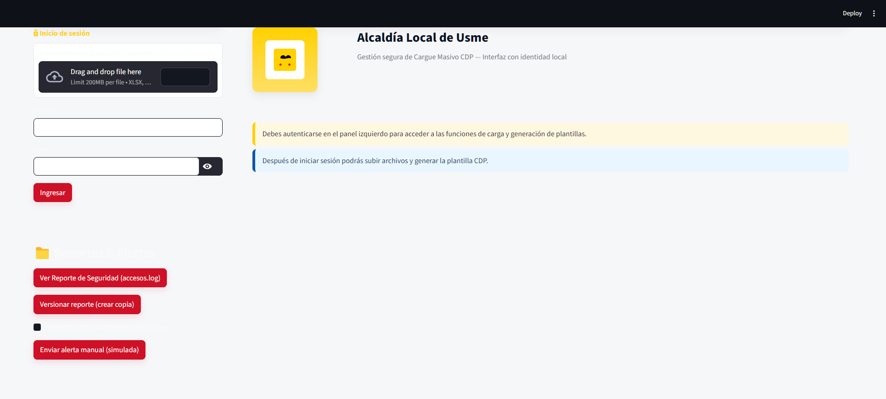
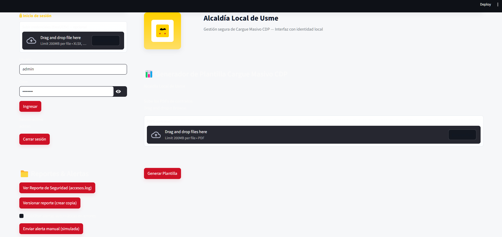
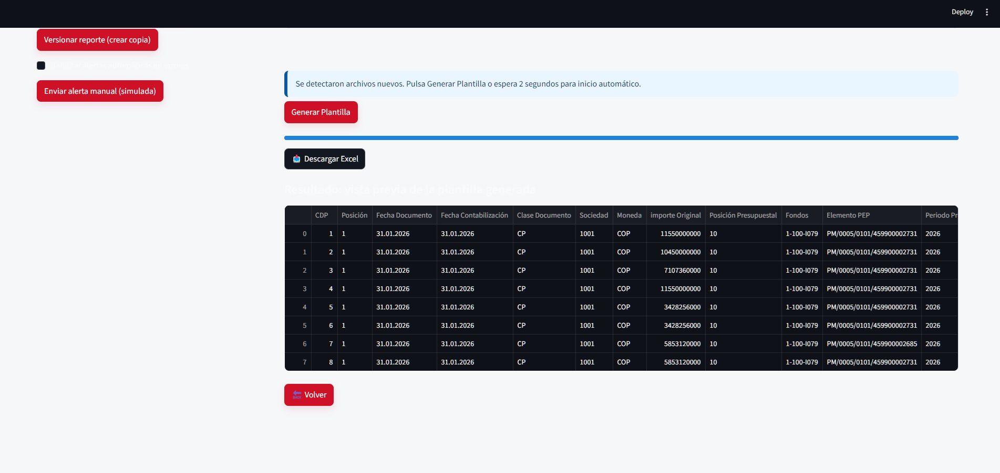
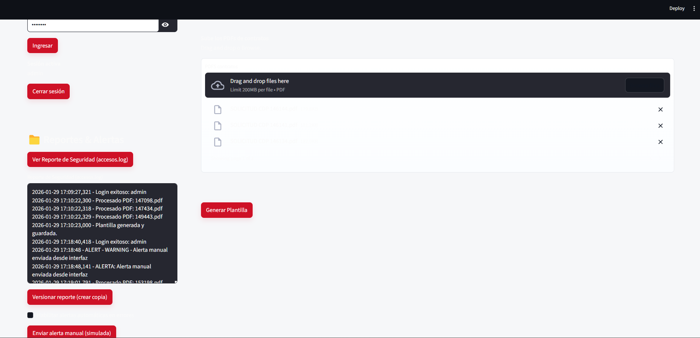
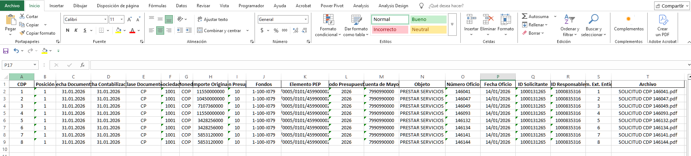

Cargue Masivo CDP - Alcaldía Local de Usme
Automatiza la generación masiva de plantillas CDP a partir de contratos en PDF, reduciendo errores manuales y asegurando trazabilidad en procesos presupuestales.
¿Qué problema resuelve?
Convierte procesos manuales en automáticos, garantiza seguridad con login y credenciales, y asegura trazabilidad con logs y auditoría.
Resumen técnico y arquitectónico
- Interfaz web en Streamlit con login seguro y roles.
- Procesamiento de PDFs con PyMuPDF (fitz) y cruce con Excel vía pandas.
- Generación de plantilla estructurada en Excel lista para cargue masivo.
- Logs de accesos, alertas automáticas y hoja de auditoría integrada.
- Arquitectura modular: credenciales, panel de seguridad, panel funcional y carpetas salidas/logs/assets.
Tecnologías usadas
- Python
- Streamlit
- PyMuPDF (fitz)
- pandas
- openpyxl
- logging & shutil
Resultados e impacto
- Eficiencia: procesos automáticos en segundos.
- Seguridad: login con credenciales y registro de accesos.
- Trazabilidad: logs versionados y alertas automáticas.
- Usabilidad: vista previa y descarga inmediata del Excel generado.
Capturas de pantalla




